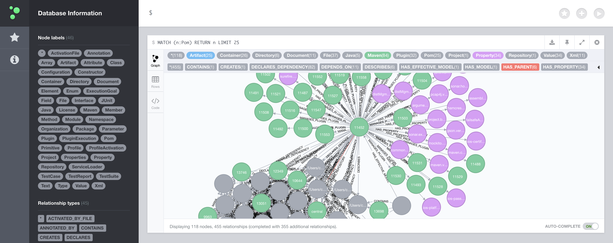
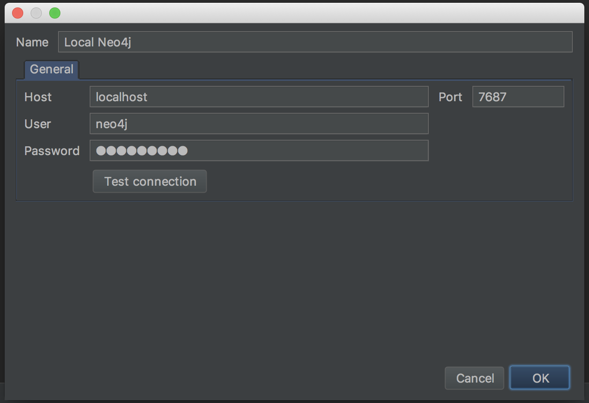
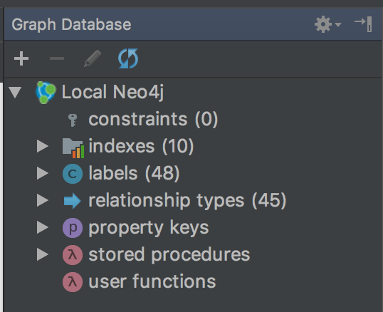
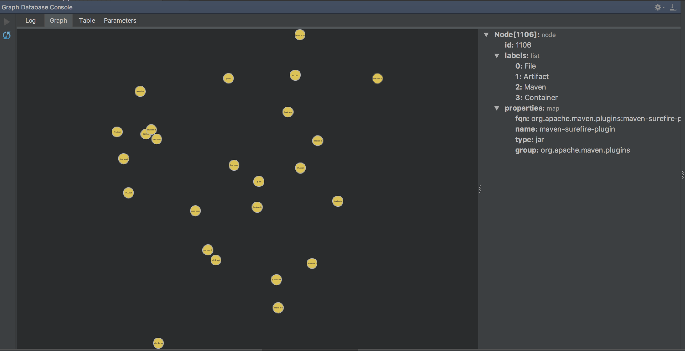

mvn jqassistant:server
Using JQAssistant
In PLC4X we are using a tool called JQAssistant for enforcing quality assurance rules.
JQAssistant can be thought of as a set of two components:
-
A set of scanners that analyse a project and stores the gathered information in for of linked graphs in a Neo4j database.
-
An engine that executes defined rules against the graph created during the scan phase of the build
These rules can produce either reports and tables or they are used to enforce rules.
If a pre-defined rule is violated the failed checks can be marked as warning or error that breaks the build.
In contrast to using the maven-enforcer-plugin doing cross-domain checks is really simple as all information is available in one big graph.
Currently the following scanners are active:
-
CDI
-
Common
-
Common Test
-
Core Analysis
-
EJB3
-
GraphML
-
JAX-RS
-
JPA 2
-
JSON
-
JUnit
-
Java
-
Java 8
-
Java EE 6
-
Maven 3
-
OSGi
-
RDBMS
-
TestNG
-
Tycho
-
XML
-
YAML
These rules that are automatically checked during the build are defined in src/jjqassistant. If defined in a reactor project, the rules apply to all modules of that (sub-)reactor. So if they are defined in the root module of the project, it applies to all modules.
Defining JQAssistant rules
TODO: Finish this "little detail" …
Using the Web-UI
The scan and analysis is automatically performed during a normal Maven build. In order to do ad-hoc queries against the project or develop new rules, the Web-UI is very helpful.
To start the Web-UI, all you need to do, is run the following command (after a build):
This will start a Neo4j server with web console.
[INFO] --- jqassistant-maven-plugin:1.3.0:server (default-cli) @ plclogger --- [INFO] Connecting to store at 'file:/Users/christofer.dutz/Projects/Apache/PLC4X/target/jqassistant/store/' 2018-04-05 19:11:14.369+0200 INFO [o.n.s.CommunityNeoServer] No SSL certificate found, generating a self-signed certificate.. 2018-04-05 19:11:14.683+0200 INFO [o.n.s.CommunityNeoServer] Starting HTTP on port 7474 (8 threads available) 2018-04-05 19:11:14.859+0200 INFO [o.n.s.w.Jetty9WebServer] Mounting static content at /webadmin 2018-04-05 19:11:14.892+0200 INFO [o.n.s.w.Jetty9WebServer] Mounting static content at /browser Apr 05, 2018 7:11:15 PM com.sun.jersey.server.impl.application.WebApplicationImpl _initiate INFORMATION: Initiating Jersey application, version 'Jersey: 1.19 02/11/2015 03:25 AM' Apr 05, 2018 7:11:15 PM com.sun.jersey.server.impl.application.WebApplicationImpl _initiate INFORMATION: Initiating Jersey application, version 'Jersey: 1.19 02/11/2015 03:25 AM' Apr 05, 2018 7:11:15 PM com.sun.jersey.server.impl.application.WebApplicationImpl _initiate INFORMATION: Initiating Jersey application, version 'Jersey: 1.19 02/11/2015 03:25 AM' 2018-04-05 19:11:15.396+0200 INFO [o.n.s.CommunityNeoServer] Remote interface ready and available at http://localhost:7474/ [INFO] Running server for module org.apache.plc4x:plc4x-parent:0.0.1-SNAPSHOT [INFO] Press <Enter> to finish.
So when visiting the anounced url with a browser, you can use the pretty useful neo4j web console.

Using IntelliJ Idea
IntelliJ comes with some interesting Neo4J support. Unfortunately this only supports Neo4j 3.
Unfortunately the process of enabling this toolset is a little less comfortable than the Web-UI version.
Even if JQAssistant uses Neo4j 2 per default, we can force it to use Neo4j 3 by providing an additional commandline parameter.
mvn -Djqassistant.neo4jVersion=3 clean install
JQAssistant uses Neo4j 3 and the resulting data directory is then in Neo4j 3 format.
In this case the server has to be started with the same parameter:
mvn -Djqassistant.neo4jVersion=3 jqassistant:server
As soon as the server is started, we can connect from the IntelliJ plugin.
Note: The connection settings also contain a username and a password.

It appears that this can simply be left empty of can contain random values.
After creating the connection, the Graph Neo4j view should list the new connection.

You can now use this to perform queries
